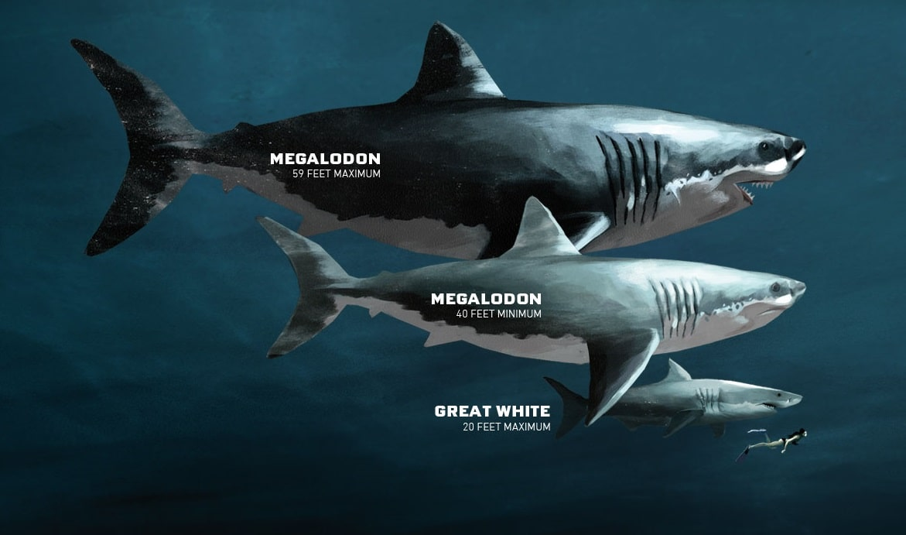

Палеонтологи предложили новый метод оценки размеров вымерших гигантских акул, и он показал, что они могли вырастать еще на несколько метров больше, чем считается.
 АкулыыыВымершие несколько миллионов лет назад мегалодоны считаются самыми крупными рыбами в истории.
Как и у прочих акул , их скелеты были хрящевыми, поэтому в палеонтологической летописи не
сохранились.
Сегодня находят разве что отдельные минерализированные позвонки мегалодонов. Зато часто попадаются зубы: все
акулы постоянно теряют их и отращивают новые в течение жизни, так что каждая может сбросить до момента
смерти десятки тысяч зубов.
Неудивительно, что подавляющее большинство методов оценки размеров мегалодонов опираются на высоту зубов или их эмалированной части. Такая зависимость показана для современных родственников мегалодонов — больших белых акул — и экстраполируется на вымерших животных. Благодаря этим расчетам первоначальные оценки длины мегалодонов, которые достигали 30 метров, были скорректированы: по наиболее общепринятым современным данным, их длина достигала «всего лишь» 15 метров.